A naive bayes classifier assigns labels to observations using a process based on Bayes’ theorem. The important element of the theorem is updating the probability of an event based on the known prior events. For instance, if all vehicles with 2 wheels are motorcycles, then we can update the probability that an unknown vehicle is a motorcycle given whether we know it has two wheels. In the case of a classification algorithm, the prosterior probabilities in question are the likelihoods that a given observation belongs to each class. Using the known prior events to update the probability of each class, the algorithm would take whichever class label had the highest likelihood and assign that to the data point in question.
A naive Bayes classifier has several variants based on the types of features being used to predict class labels. - Gaussian: If the predictors are continuous, then we likely will not have exact probabilities for the given input point (as no other point may have the exact same value for all input features). As such, a different approach is required, where it is assumed that the continuous attributes are normally distributed. Then, for a given point that needs to be classified, we can express the probability of it belonging to a certain class as the likelihood that the point came from each class’s distribution. This is relatively easy, as we can simply find the likelihood that the point was generated by each class distribution, and assign the most likely one as the label. - Multinomial: This method is preferred when the predictors are generated by a multinomial distribution, meaning they are discrete, with more than 2 levels. Labels would be assigned to new observations based on the conditional probability of observing the point’s attributes given that it came from each class (which can be calculated again using Baye’s theorem since the attributes are discirete). - Bernoulli Naive Bayes: The Bernoulli method is preferred when the predictors are binary, meaning they are discrete but only have two values they can take. This is calculated similar to the multinomial variant, but is even more straightforwards as there are only two classes.
Naive Bayes for Retail Investor Activity
Objective of Naive Bayes for my Project: With my Naive Bayes classifier, I hope to identify stocks in the top 10 by retail investor activity that have increases in retail investor activity on a given day. To do this I will convert a continuous variable (the daily change in retail investor activity) into two classes based on whether a given stock increased or decreased in activity day-over-day.
To predict this outcome variable for each stock in the top 10, I will use two different sets of predictors in the Naive Bayes classifier. First, I will use my tabular data: - Individual investor sentiment from the proceding week, including the percent of respondents who were bearish, bullish, and neutral on the market. - Tabular data from reddit posts including the number of comments.
Second, I will use my textual data to predict the same increase/decrease outcome variable: - A corpus of 7.5k reddit posts mentioning top-10 tickers, which contain about 50,000 unique words.
Prep Data for Naive Bayes
We are splitting the data into training, validation, and test sets to ensure we optimally fit the model and avoid over or under fitting. In particular, we can use the validation set to tune our model and improve its generalizability, and then use the test set to evaluate the performance of our model. I will do a 70-15-15 split between the train, evaluation, and test data, and this is done simply by randomly splitting the dataset.
For the text data: I will prepare the corpus in a few steps. 1. I have already used a stemmer to reduce the number of unique words by about 7,000. After this reduction we still have 50,000 words. 2. I will filter out words with <5 total uses in the corpus. 3. Then, I will join my binary outcome variable with the reddit text data according to the date of each post. The outcomes will be lagged by 1 day, as we want to ensure that the reddit mentions preceeded the change in a stock’s trading activity. As an example of how this will work: the outcome variable for a post that mentioned ticker QQQ on 12/1 would be 1 or 0 depending on whether QQQ increased or decreased in activity on 12/2.
from sklearn.model_selection import train_test_splitimport csvimport pandas as pdimport osos.getcwd()dataIn = pd.read_csv('../data/01-modified-data/joinedSentiment.csv')print(dataIn['deltaActivity'] ==0)
# Let's read in our vectorized data from reddittextsIn = pd.read_csv('../data/01-modified-data/vectorizedReddit.csv')# Double check shapeprint(textsIn.shape)
(7436, 49692)
# Check columns are sorted by occurenceprint(textsIn.sum(axis=0))# Looks like it is sorted in the proper order# How many columns are for a word that is only used once?s = textsIn.sum(axis=0)textsIn=textsIn[ s.index[s !=1] ]print(textsIn.head())
# How big a change was removing single-use words?textsIn.shape# After removing words only used once, we have 35k wordsprint(dataIn.head)# Now, lets try and fit the GNB# We will need to merge in the activity change data, lagged by one dayfrom datetime import datetime, timedeltadataIn['date.x'] = dataIn['date.x'].apply(lambda x: datetime.strptime(x, '%Y-%m-%d').date())dataIn['date.x'] = dataIn['date.x'] - timedelta(days =1)
<bound method NDFrame.head of Unnamed: 0 X date.x ticker activity sentiment deltaActivity \
0 1 9551 2020-01-02 TSLA 0.0226 0 -0.0014
1 2 9552 2020-01-02 SPY 0.0147 3 -0.0341
2 3 9553 2020-01-02 ROKU 0.0119 0 0.0000
3 4 9554 2020-01-02 QQQ 0.0093 6 -0.0111
4 5 9555 2020-01-02 MSFT 0.0116 2 -0.0181
... ... ... ... ... ... ... ...
9555 9556 6 2023-10-18 NVDA 0.0695 2 0.0428
9556 9557 7 2023-10-18 META 0.0124 1 -0.0064
9557 9558 8 2023-10-18 AMZN 0.0185 6 -0.0016
9558 9559 9 2023-10-18 AMD 0.0264 2 0.0025
9559 9560 10 2023-10-18 AAPL 0.0255 5 -0.0204
deltaSentiment newEntry week.x ... Neutral Bearish Total X8.week \
0 0 False 1 ... NaN NaN NaN NaN
1 -7 False 1 ... NaN NaN NaN NaN
2 0 True 1 ... NaN NaN NaN NaN
3 1 False 1 ... NaN NaN NaN NaN
4 1 False 1 ... NaN NaN NaN NaN
... ... ... ... ... ... ... ... ...
9555 0 False 42 ... NaN NaN NaN NaN
9556 2 False 42 ... NaN NaN NaN NaN
9557 4 False 42 ... NaN NaN NaN NaN
9558 -1 False 42 ... NaN NaN NaN NaN
9559 6 False 42 ... NaN NaN NaN NaN
Spread SPYHighWk SPYLowWK SPYCloseWK week.y lagweek
0 NaN NaN NaN NaN NaN NaN
1 NaN NaN NaN NaN NaN NaN
2 NaN NaN NaN NaN NaN NaN
3 NaN NaN NaN NaN NaN NaN
4 NaN NaN NaN NaN NaN NaN
... ... ... ... ... ... ...
9555 NaN NaN NaN NaN NaN NaN
9556 NaN NaN NaN NaN NaN NaN
9557 NaN NaN NaN NaN NaN NaN
9558 NaN NaN NaN NaN NaN NaN
9559 NaN NaN NaN NaN NaN NaN
[9560 rows x 23 columns]>
# Now we subtracted one day, let's add the categorical label variable we are trying to predict and then split the datadataIn['activityIncrease'] = dataIn['deltaActivity'].apply(lambda x: int(x >0) )# Change percent signs to decimals#dataIn['Bearish'] = dataIn['Bearish'].apply(lambda x: x.rstrip("%").astype(float)/100)#dataIn['Bullish'] = dataIn['Bullish'].apply(lambda x: x.rstrip("%").astype(float)/100)#dataIn['Neutral'] = dataIn['Neutral'].apply(lambda x: x.rstrip("%").astype(float)/100)#dataIn['Spread'] = dataIn['Spread'].apply(lambda x: x.rstrip("%").astype(float)/100)
AttributeError: 'float' object has no attribute 'rstrip'
# Now that we subtracted one day in the cell above, let's merge the text corpus with the daily activity labeltextsIn = pd.DataFrame(textsIn)textsIn['date_utc'] = textsIn['date_utc'].apply(lambda x: datetime.strptime(x, '%Y-%m-%d').date())processed = pd.merge(dataIn, textsIn, how ='left', left_on = ['date.x', 'ticker'], right_on = ['date_utc', 'ticker'] )
# now let's check that our merge worked and then split into test, training, and validation#print(processed.iloc[:,range(15,25)].head)#print(processed.isna().sum() < processed.shape[0])processed2 = processed.dropna(subset=['date_utc'])print(processed2.head)train, test = train_test_split(processed2, test_size=0.15)train, validate = train_test_split(train, test_size =0.177)
# Now we have our filtered data, with 2000 observations. Train is 1411print(train.shape)# Now we can try and fit our GNB classifierfrom sklearn.naive_bayes import GaussianNBfrom sklearn.metrics import accuracy_scoreimport timedef train_MNB_model(Xtrn, Xtst, Ytrn, Ytst, i_print=False):#if(i_print):#print(X.shape,Y.shape)#SPLIT x_train=Xtrn y_train=Ytrn x_test=Xtst y_test=Ytst# INITIALIZE MODEL model = GaussianNB()# TRAIN MODEL start = time.process_time() model.fit(x_train,y_train) time_train=time.process_time() - start# LABEL PREDICTIONS FOR TRAINING AND TEST SET start = time.process_time() yp_train = model.predict(x_train) yp_test = model.predict(x_test) time_eval=time.process_time() - start acc_train= accuracy_score(y_train, yp_train)*100 acc_test= accuracy_score(y_test, yp_test)*100if(i_print):print(acc_train,acc_test,time_train,time_eval)return (acc_train,acc_test,time_train,time_eval)
(1411, 35428)
# Test function on training and validation setnonNumericColumns = ['X', 'activityIncrease', 'date.x', 'Total', 'X8.week', 'date.x', 'SPYHighWk', 'SPYLowWK', 'SPYCloseWK', 'date_utc', 'title', 'ticker', 'date.y', 'sentiment_x', 'deltaActivity', 'deltaSentiment', 'activity_x', 'week.x', 'weekyear', 'newEntry']# All of the below are for the text modelxtrn = train.drop(columns = nonNumericColumns)xtst = validate.drop(columns = nonNumericColumns)xreal = test.drop(columns = nonNumericColumns)# replace remaining NAsxtrn = xtrn.fillna(0)xtst = xtst.fillna(0)xreal = xreal.fillna(0)# pull out the output feature (increase 1 or 0)ytrn = train['activityIncrease']ytst = validate['activityIncrease']yrl = test['activityIncrease']# These are for the non-text, tabular modelxtabtrn = xtrn.iloc[:,0:8]xtabtst = xtst.iloc[:,0:8]xtabreal = xreal.iloc[:,0:8]#Same output features, no need to repeat, and NAs are already replacedprint(list(xtabtrn.columns.values) )(acc_train,acc_test,time_train,time_eval)=train_MNB_model(xtrn, xtst, ytrn, ytst, i_print=True)
# More helper functionsimport numpy as npimport matplotlib.pyplot as pltdef save_results_tab(path_root): out= np.transpose(np.array([num_features_tab,train_accuracies_tab,test_accuracies_tab,train_time_tab,eval_time_tab])) out= pd.DataFrame(out) out.to_csv(path_root+"_tab.csv")#UTILITY FUNCTION TO PLOT RESULTSdef plot_results_tab(path_root):#PLOT-1 plt.plot(num_features_tab,train_accuracies_tab,'-or') plt.plot(num_features_tab,test_accuracies_tab,'-ob') plt.xlabel('Number of features') plt.ylabel('ACCURACY: Training (blue) and Test (red)') plt.savefig(path_root+'_tab-1.png') plt.show()# #PLOT-2 plt.plot(num_features_tab,train_time_tab,'-or') plt.plot(num_features_tab,eval_time_tab,'-ob') plt.xlabel('Number of features') plt.ylabel('Runtime: training time (red) and evaluation time(blue)') plt.savefig(path_root+'_tab-2.png') plt.show()# #PLOT-3 plt.plot(np.array(test_accuracies_tab),train_time_tab,'-or') plt.plot(np.array(test_accuracies_tab),eval_time_tab,'-ob') plt.xlabel('test_accuracies') plt.ylabel('Runtime: training time (red) and evaluation time (blue)') plt.savefig(path_root+'_tab-3.png') plt.show()# #PLOT-3 plt.plot(num_features_tab,np.array(train_accuracies_tab)-np.array(test_accuracies_tab),'-or') plt.xlabel('Number of features') plt.ylabel('train_accuracies-test_accuracies') plt.savefig(path_root+'_tab-4.png') plt.show()output_dir ="./"save_results_tab(output_dir+"/partial_grid_search")plot_results_tab(output_dir+"/partial_grid_search")
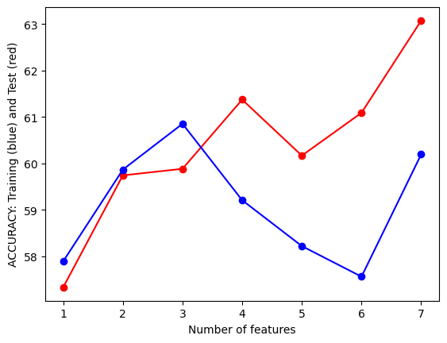
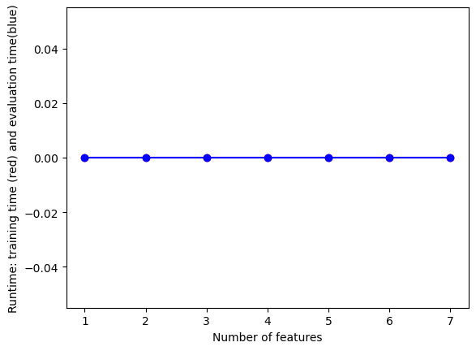
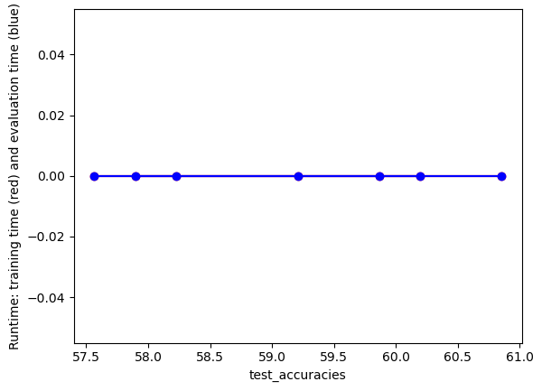
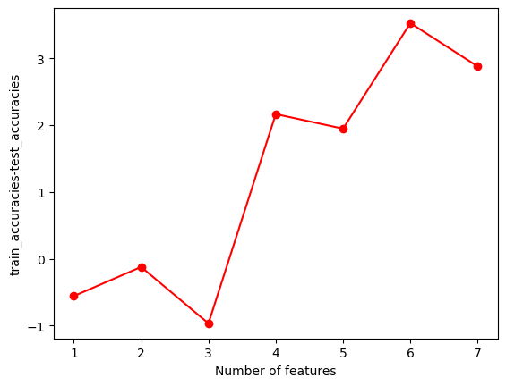
Feature selection for Text data
# now lets start removing features using code from the lab demodef initialize_arrays():global num_features,train_accuraciesglobal test_accuracies,train_time,eval_time num_features=[] train_accuracies=[] test_accuracies=[] train_time=[] eval_time=[]# start arraysinitialize_arrays()# DEFINE SEARCH FUNCTIONdef partial_grid_search(num_runs, min_index, max_index):for i inrange(1, num_runs+1):# SUBSET FEATURES upper_index=min_index+i*int((max_index-min_index)/num_runs)# temp data xtraintemp =xtrn.iloc[:,0:upper_index] xtesttemp =xtst.iloc[:,0:upper_index]#TRAIN (acc_train,acc_test,time_train,time_eval)=train_MNB_model(xtraintemp, xtesttemp, ytrn, ytst, i_print=False)if(i%5==0):print(i,upper_index,xtraintemp.shape[1],acc_train,acc_test)#RECORD num_features.append(xtraintemp.shape[1]) train_accuracies.append(acc_train) test_accuracies.append(acc_test) train_time.append(time_train) eval_time.append(time_eval)# DENSE SEARCH (SMALL NUMBER OF FEATURES (FAST))partial_grid_search(num_runs=100, min_index=0, max_index= xtrn.shape[1])# SPARSE SEARCH (LARGE NUMBER OF FEATURES (SLOWER))#partial_grid_search(num_runs=20, min_index=1000, max_index=10000)
# More helper functionsimport numpy as npimport matplotlib.pyplot as pltdef save_results(path_root): out= np.transpose(np.array([num_features,train_accuracies,test_accuracies,train_time,eval_time])) out= pd.DataFrame(out) out.to_csv(path_root+".csv")#UTILITY FUNCTION TO PLOT RESULTSdef plot_results(path_root):#PLOT-1 plt.plot(num_features,train_accuracies,'-or') plt.plot(num_features,test_accuracies,'-ob') plt.xlabel('Number of features') plt.ylabel('ACCURACY: Training (blue) and Test (red)') plt.savefig(path_root+'-1.png') plt.show()# #PLOT-2 plt.plot(num_features,train_time,'-or') plt.plot(num_features,eval_time,'-ob') plt.xlabel('Number of features') plt.ylabel('Runtime: training time (red) and evaluation time(blue)') plt.savefig(path_root+'-2.png') plt.show()# #PLOT-3 plt.plot(np.array(test_accuracies),train_time,'-or') plt.plot(np.array(test_accuracies),eval_time,'-ob') plt.xlabel('test_accuracies') plt.ylabel('Runtime: training time (red) and evaluation time (blue)') plt.savefig(path_root+'-3.png') plt.show()# #PLOT-3 plt.plot(num_features,np.array(train_accuracies)-np.array(test_accuracies),'-or') plt.xlabel('Number of features') plt.ylabel('train_accuracies-test_accuracies') plt.savefig(path_root+'-4.png') plt.show()output_dir ="./"save_results(output_dir+"/partial_grid_search")plot_results(output_dir+"/partial_grid_search")
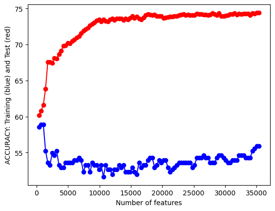
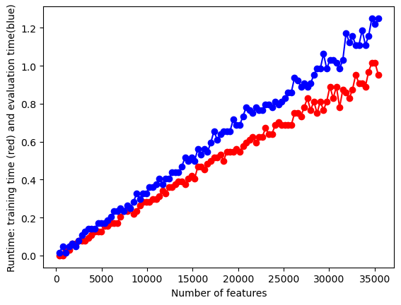
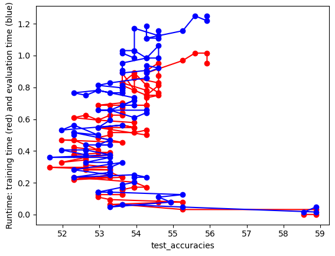
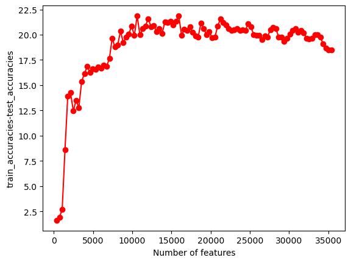
Naive Bayes with Labeled Record Data
# Based on previous section, using all 8 features is ideal# fit model finally, report on overall accuracyfrom sklearn import metricsfrom sklearn.metrics import confusion_matriximport seaborn as snsrealTabModel = GaussianNB()realTabModel.fit(xtabtrn, ytrn)realTabTestPreds = realTabModel.predict(xtabreal)confusion_matrix = metrics.confusion_matrix(yrl.values, realTabTestPreds)cm_display = metrics.ConfusionMatrixDisplay(confusion_matrix = confusion_matrix, display_labels = [False, True])cm_display.plot()plt.show()tabOutcomeData = pd.DataFrame.from_dict( {'ticker': test['ticker'], 'comments': xtabreal['comments'], 'real value': yrl.values, 'predicted value': realTabTestPreds, "miss": yrl.values - realTabTestPreds} )sns.scatterplot(data=tabOutcomeData.groupby(['ticker'])['miss'].mean().to_frame(), x ='miss', y ='ticker')plt.xlabel('Average Prediction Miss (-1 = mistaken increase, 1 = mistaken decrease)')plt.ylabel('Stock Ticker')plt.title('Average Prediction Misses by Stock')plt.show()sns.boxplot(data=tabOutcomeData, x ='predicted value', y ='comments')plt.xlabel('Model Prediction (0 decrease, 1 increase)')plt.ylabel('Number of Comments on Related Posts')plt.title('Predictions vs. Comments on Reddit Posts')plt.show()
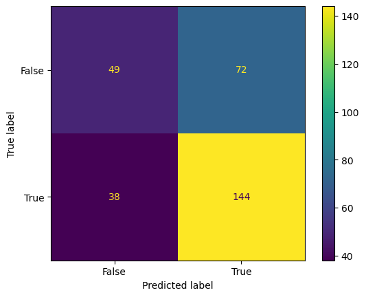
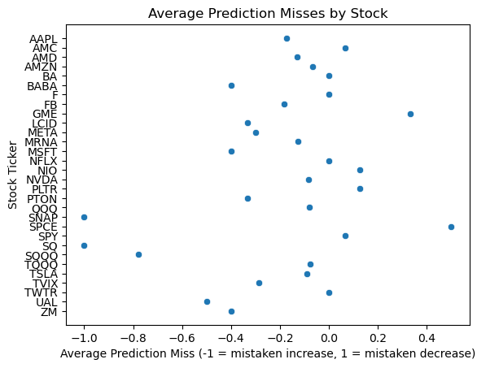
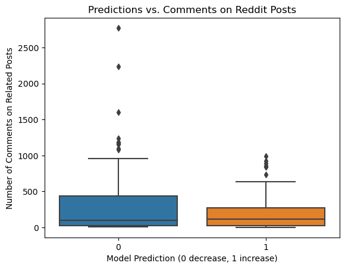
The optimal model for the record data was the one that included all 7 predictors. I identified this in the feature selection plots using the elbow method, which showed that the increase in performance never leveled off as more tabular features were added.
Then, I fit this model on the training data and used it to predict values in the test set, the results of which are pictured in the first image above, the confusion matrix. While I expected the model to perform worse on the test set, the overall accuracy score (~0.64) was similar to those observed in the training (~0.60) and validation (~0.63) sets. The model appears to have learned to be successful by predicting more 1’s (or increases) than 0’s (or decreases). This gave the model high sensitivity but low precision.
In terms of over and under fitting, I believe my model is currently underfit although it includes all available features, with poor performance over all. I do not believe the record data model has been over fit because it has similar performance in both the training and test sets, so it has low variance. Yet the model has high bias in both training and test sets, only capturing an accurate result 60% of the time, barely beating a coin toss.
The projects findings will be documented in a final slideshow, which will polish up and abridge the work contained in this page.
In conclusion: A Gaussian Naive Bayes classifier performs moderately well at predicting whether a given stock in the top-10 rankings of retail trader activity will see an increase or decrease in activity on the next trading day. With only 7 input features (such as the sentiment of individual investors and the number of reddit comments on posts mentioning the stock), the model identifies increases or decreases correctly about 64% of the time. While this is an improvement over random chance, the model could certainly be improved. The model also shows some relationships between variables: Certain stocks were almost always predicted over-optimisticly, such as SNAP (Snapchat), which was a famous stock that retail investors were interested in but lost money on. The number of comments also appears to be negatively correlated to stock increases, with tickers that had more comments on related posts being less likely to have an increase predicted the next day.
Naive Bayes with Labeled Text Data
Using your optimal feature set from the previous section, fit a final “optimal” NB model for your Record data. Report and comment on the findings. It is required that you create code, appropriate visualizations, result summaries, confusion matrices, etc Describe how the trained model is tested on the testing dataset. Discuss the evaluation metrics used to assess the performance of the Naive Bayes classifier (e.g., accuracy, precision, recall, F1-score). Discuss the concepts of overfitting and under-fitting and whether your model is doing it. Discuss the model’s performance in terms of accuracy and other relevant metrics. Describe how the project findings will be documented and reported, including the format of reports or presentations. e.g. what is the output that you generate. What does the output mean? What does it tell you about your data? Does your model do a good job of predicting your test data? Include and discuss relevant visualizations, results, the confusion matrices, etc . Create and include a minimum of three visualizations for each case (text and record classification). Write a conclusion paragraph interpreting the results. Note, this is not the same as a write-up of technical methodological details.
# fit model finally, report on overall accuracy# based on the previous charts, we can use the elbow method for realModel = GaussianNB()realModel.fit(xtrn.iloc[:,0:10000], ytrn)realTestPreds = realModel.predict(xreal.iloc[:,0:10000])print(realTestPreds)print(yrl.values)confusion_matrix = metrics.confusion_matrix(yrl.values, realTestPreds)cm_display = metrics.ConfusionMatrixDisplay(confusion_matrix = confusion_matrix, display_labels = [False, True])cm_display.plot()plt.show()outcomeData = pd.DataFrame.from_dict( {'ticker': test['ticker'], 'comments': xreal['comments'], 'real value': yrl.values, 'predicted value': realTestPreds, "miss": yrl.values - realTestPreds} )sns.scatterplot(data=outcomeData.groupby(['ticker'])['miss'].mean().to_frame(), x ='miss', y ='ticker')plt.xlabel('Average Prediction Miss (-1 = mistaken increase, 1 = mistaken decrease)')plt.ylabel('Stock Ticker')plt.title('Average Prediction Misses by Stock')plt.show()sns.boxplot(data=outcomeData, x ='predicted value', y ='comments')plt.xlabel('Model Prediction (0 decrease, 1 increase)')plt.ylabel('Number of Comments on Related Posts')plt.title('Predictions vs. Comments on Reddit Posts')plt.show()
For the textual data Gaussian Naive Bayes classifier, it required more deduction to pick the correct number of features. This is because I began with about 35,000 columns in the dataset, due to the large number of unique words used in the reddit text corpus. However, using the elbow method, it appeared that the model’s gains in performance peaked around the 10,000 feature mark. This number was also the point where the model reached its approximate peak in performance in the validation set, so I was curious to extend it to the test set and determine if it would continue to have low bias.
As such, I fit this model on the training data and used it to predict values in the test set, the results of which are pictured in the first image above, the confusion matrix. Surprisingly, the far more comlicated model performed worse on the test set in terms of overall accuracy than the simple, 7-feature model (~0.61 instead of ~0.64). This performance was similar to those observed in the training (~0.60) and validation (~0.63) sets. Once again, the model appears to have learned to be successful by predicting more 1’s (or increases) than 0’s (or decreases). This gave the model high sensitivity but low precision.
In terms of over and under fitting, I believe the text data model model is still underfit, because it continues to have high bias and low variance across the training and test set. This is supported by the model’s similar accuracy in both the training and test datasets. These findings will also be incorporated into a slideshow, along with, potentially, further work to tune the text data analysis.
In conclusion: A Gaussian Naive Bayes classifier trained on 1400 reddit posts performs moderately well at predicting whether a given stock in the top-10 rankings of retail trader activity will see an increase or decrease in activity on the next trading day. With 10,000 input features, the model identifies increases or decreases correctly about 61% of the time. While this is an improvement over random chance, the model could certainly be improved. As a point of interest, I included the same tabular data points in the text model as well, and found the relationships between the variables had changed. When accounting for textual data from reddit, the model begins to predict increases for stock tickers with a large number of comments in related posts. Further, the model’s performance changed for particular stocks, with SNAP (Snapchat) no longer being tied with SQQQ for the most optimistic performance. Based on these results, it does not seem that reddit post texts contain a large amount of useful information for predicting retail investor actvity.